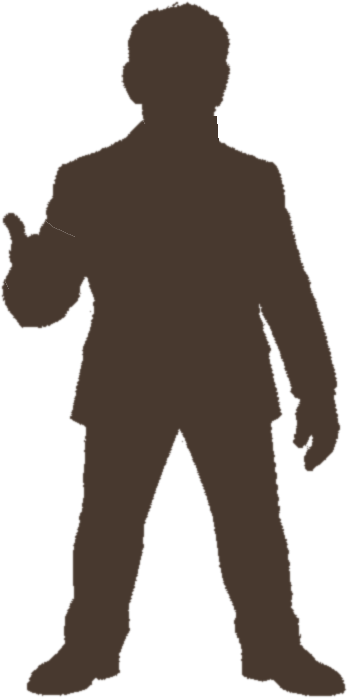
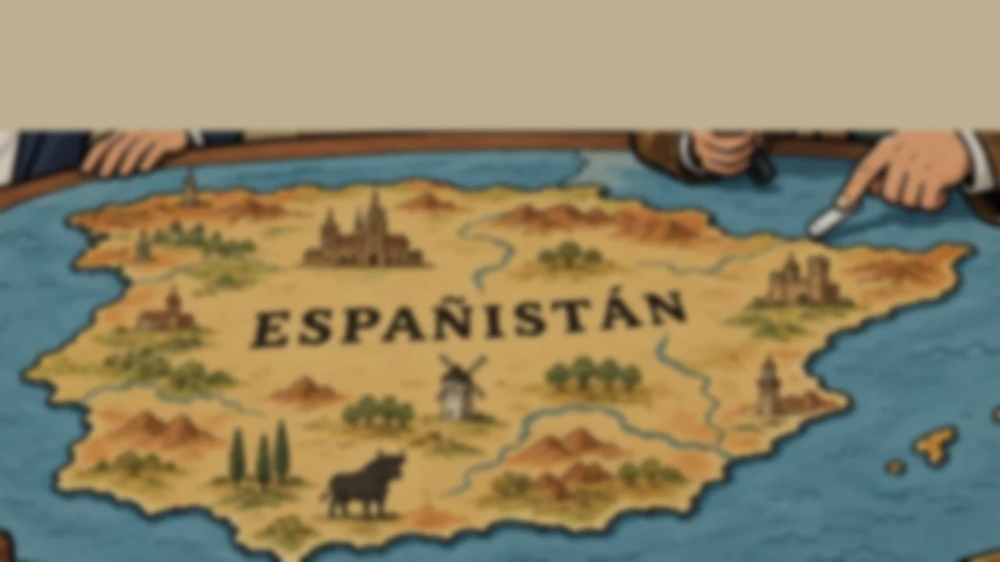
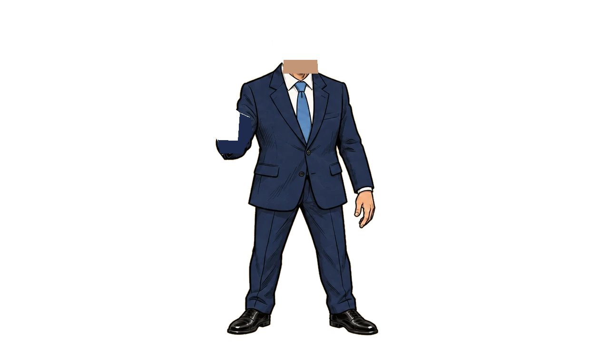
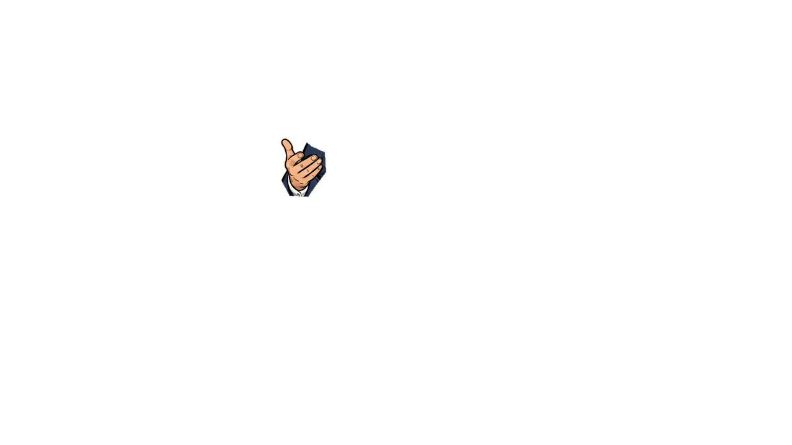
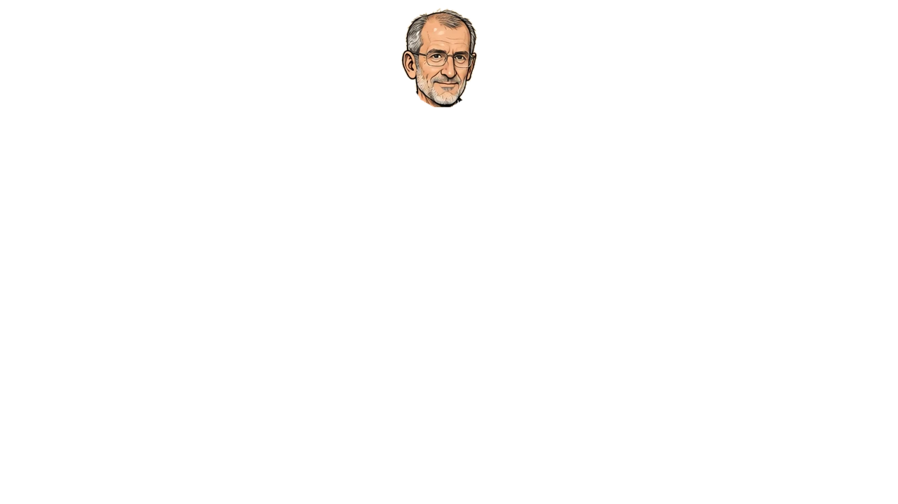

GEORGE SANTAYANA · 1905
«Quien no recuerda su pasado está condenado a repetirlo».
FEIJOLO
Líder de la oposición
PP
Quién ha gobernado Españistán
PSOE
PP
PSOE
PP
PSOE
198219962004201120182026
Fuente: La Moncloa, presidentes del Gobierno
✓Datos públicos
✓La palabra exacta de cada sentencia
✓Lo bueno también se cuenta
ESPAÑISTÁN
Episodio 2 · Feijolo y el PP
Mismas reglas. Mismas preguntas.